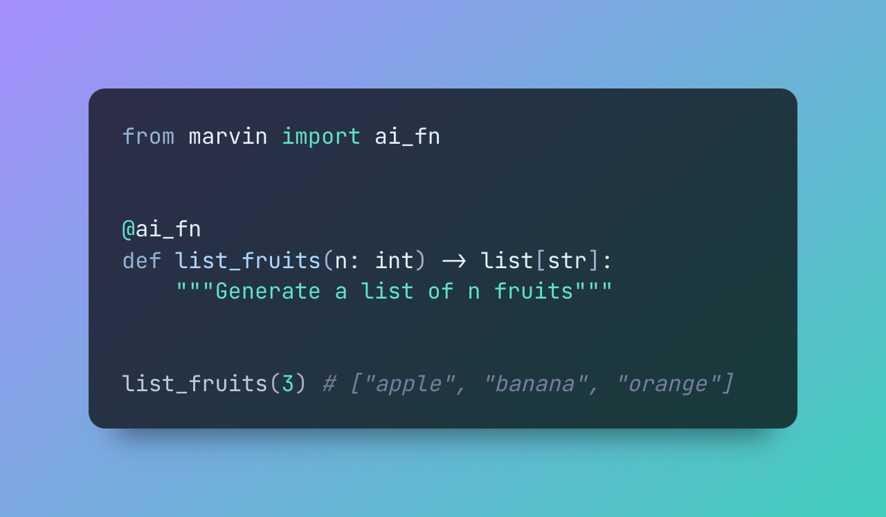

AI Functions¶

Features
🎉 Create AI functions with a single @ai_fn decorator
🧠 Use an LLM as an execution runtime to generate outputs without code
🧱 Use native data structures as inputs and outputs
Use Cases
🏗️ NLP pipelines
🧪 Synthetic data generation
✅ Sentiment analysis
AI functions are functions that are defined locally but use AI to generate their outputs. Like normal functions, AI functions take arguments and return structured outputs like lists, dicts or even Pydantic models. Unlike normal functions, they don't need any source code!
Consider the following example, which contains a function that generates a list of fruits. The function is defined with a descriptive name, annotated input and return types, and a docstring -- but doesn't appear to actually do anything. Nonetheless, because of the @ai_fn decorator, it can be called like a normal function and returns a list of fruits.
from marvin import ai_fn
@ai_fn
def list_fruits(n: int) -> list[str]:
"""Generate a list of n fruits"""
list_fruits(n=3) # ["apple", "banana", "orange"]
Tip
AI functions work best with GPT-4, but results are still very good with GPT-3.5.
... or another example, this time returning a finite set of Literal values to classify GitHub issues:
from typing_extensions import Literal
from marvin import ai_fn
IssueTag = Literal['bug', 'docs', 'enhancement', 'feature']
@ai_fn
def issue_classifier(issue_body: str) -> list[IssueTag]:
""" returns appropriate issue tags given an issue body """
issue_classifier("""
yeah so i tried using the tui and it teleported me to another dimension.
also there's a typo on the ai_fn's page, you forgot the code
""")
# ['bug', 'docs']
When to use AI functions¶
Because AI functions look and feel just like normal functions, they are the easiest way to add AI capabilities to your code -- just write the definition of the function you want to call, and use it anywhere! However, though they can feel like magic, it's important to understand that there are times you should prefer not to use AI functions.
Modern LLMs are extremely powerful, especially when working with natural language and ideas that are easy to discuss but difficult to describe algorithmically. However, since they don't actually execute code, computing extremely precise results can be surprisingly difficult. Asking an AI to compute an arithmetic expression is a lot like asking a human to do the same -- it's possible they'll get the right answer, but you'll probably want to double check on a calculator. On the other hand, you wouldn't ask the calculator to rewrite a paragraph as a poem, which is a perfectly natural thing to ask an AI. Bear in mind that AI functions are (relatively) slow and expensive compared to running code on your computer.
Therefore, while there are many appropriate times to use AI functions, it's important to note that they complement normal functions incredibly well and to know when to use one or the other. AIs tend to excel at exactly the things that are very hard to describe algorithmically. If you're doing matrix multiplication, use a normal function. If you're extracting all the animals that are native to Europe from text, use an AI function.
Here is a guide for when to use AI functions:
- Generating data (any kind of text, but also data matching a certain structure or template)
- Translating or rewriting text
- Summarization
- Sentiment analysis
- Keyword or entity extraction
- Asking qualitative questions about quantitative data
- Fixing spelling or other errors
- Generating outlines or action items
- Transforming one data structure to another
Here is a guide for when NOT to use AI functions:
- The function is easy to write normally
- You want to be able to debug the function
- You require deterministic outputs
- Precise math beyond basic arithmetic
- You need any type of side effect or IO (AI functions are not "executed" in a traditional sense, so they can't interact with your computer or network)
- The objective is TOO magic (tempting though it may be, you can't write an AI function to solve an impossible problem)
Basic usage¶
The ai_fn decorator can be applied to any function. For best results, the function should have an informative name, annotated input types, a return type, and a docstring. The function does not need to have any source code written, but advanced users can add source code to influence the output in two different ways (see "writing source code")
When a ai_fn-decorated function is called, all available information is sent to the AI, which generates a predicted output. This output is parsed and returned as the function result.
from marvin import ai_fn
@ai_fn
def my_function(input: Type) -> ReturnType:
"""
A docstring that describes the function's purpose and behavior.
"""
# call the function
my_function(input="my input")
Note the following:
- Apply the decorator to the function. It does not need to be called (though it can take optional arguments)
- The function should have a descriptive name
- The function's inputs should have type annotations
- The function's return type should be annotated
- The function has a descriptive docstring
- The function does not need any source code!
Advanced usage¶
Customizing the LLM¶
By default, AI functions use Marvin's global LLM settings. However, you can change this on a per-function basis by providing a valid model name or temperature to the @ai_fn decorator.
For example, this function will always use GPT-3.5 with a temperature of 0.2.
from marvin import ai_fn
@ai_fn(llm_model='gpt-3.5-turbo', llm_temperature=0.2)
def my_function():
...
Deterministic AI functions¶
LLM implementations like ChatGPT are non-deterministic; that is, they do not always return the same output for a given input. In some use cases, like natural conversation, this is desireable. In others, especially programmatic ones, it is not. You can control this by setting the model temperature. High temperature leads to greater variation in responses; a temperature of 0 will always give the same response for a given input. Marvin's default temperature is 0.8. To create a deterministic AI function, set its temperature to 0.
Upgrading Marvin may change AI function outputs
Marvin wraps your AI function with additional prompts in order to get the LLM to generate parseable outputs. We are constantly adjusting those prompts to improve performance and address edge cases. Therefore, even with a temperature of 0, what your AI function sends to the LLM might change if you upgrade from one version of Marvin to another, resulting in different AI function outputs. Therefore, AI functions with temperature=0 are only guaranteed to be deterministic for a specific Marvin version.
Getting values at runtime¶
By default, the ai_fn decorator will not attempt to run your function, even if it has source code. The LLM will attempt to predict everything itself. However, sometimes it is useful to manipulate the function at runtime. There are two ways to do this.
The first is to wrap your function in another function or decorator. For example, here we write a private AI function to extract keywords from text and call it from a user-facing function that accepts a URL and loads the actual content.
import httpx
from marvin import ai_fn
@ai_fn
def _get_keywords(text:str) -> list[str]:
"""extract keywords from string"""
def get_keywords_from_url(url: str) -> list[str]:
response = httpx.get(url)
return _get_keywords(response.content)
An advanced alternative is to yield from the ai function itself. This is supported for a single yield statement:
import httpx
from marvin import ai_fn
@ai_fn
def get_keywords_from_url(url: str) -> list[str]:
"""Extract keywords from the text of a URL"""
response = httpx.get(url)
yield response.content
In this case, the function will be run up to the yield statement, and the yielded value will be considered by the LLM when generating a result. Therefore, these two examples are equivalent. It may be that the first example is more legible than the second, which is extremely magical.
Async functions¶
The ai_fn decorator works with async functions.
Complex annotations¶
Annotations don't have to be types; they can be complex objects or even string descriptions. For inputs, the annotation is transmitted to the AI as-is. Return annotations are processed through Marvin's ResponseFormatter mechanism, which puts extra emphasis on compliance. This means you can supply complex instructions in your return annotation. However, note that you must include the word json in order for Marvin to automatically parse the result into native objects!
Therefore, consider these two approaches to defining an output:
from marvin import ai_fn
@ai_fn
def fn_with_docstring(n: int) -> list[dict]:
"""
Generate a list of n people with names and ages
"""
@ai_fn
def fn_with_string_annotation(n: int) -> 'a json list of dicts that have keys for name and age':
"""
Generate a list of n people
"""
class Person(pydantic.BaseModel):
name: str
age: int
@ai_fn
def fn_with_structured_annotation(n: int) -> list[Person]:
"""
Generate a list of n people
"""
fn_with_structured_annotation, will return Pydantic models instead of dicts). However, they are increasingly specific in their instructions to the AI. While you should always try to make your intent as clear as possible to the AI, you should also choose an approach that will make sense to other people reading your code. This would lead us to probably prefer the first or third functions over the second, which doesn't look like a typical Python function.
Plugins¶
AI functions are powered by bots, so they can also use plugins. Unlike bots, AI functions have no plugins available by default in order to minimize the possibility of confusing behavior. You can provide plugins when you create the AI function: